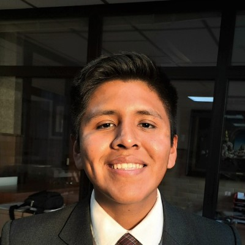

Cristian Paredes | WDD 130

Hi my name is Cristian Paredes. I'm from Bolivia, I love to play soccer and enjoy spending time with my little family. I love the gospel and the church.

Hi my name is Cristian Paredes. I'm from Bolivia, I love to play soccer and enjoy spending time with my little family. I love the gospel and the church.